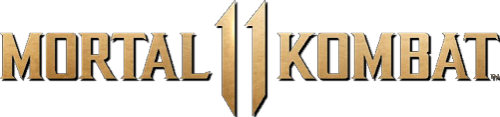
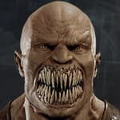
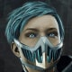
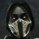
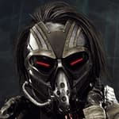
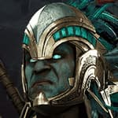
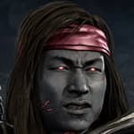
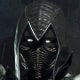
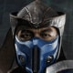
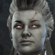
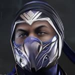
| U = Up/Jump D = Down/Crouch F = Forward/Toward B = Back/Away |
Dash = F, F Back Dash = B, B Uppercut = (D+X) Sweep = (B+A) Run = (Dash+ZR) Pause/Movelist = START |
| Universal : FP = Front Punch BP = Back Punch FK = Front Kick BK = Back Kick *TH = Throw (Away) *(F+TH ) = Throw (Towards) SI = Stage Interact FS = Flip Stance BL = Block TH (Away) Reversal = FP/FK TH (Towards) Reversal = BP/BK |
Switch: FP = Y BP = X FK = B BK = A *TH = L *(F+TH ) = (F+L) SI = R FS = ZL BL = ZR TH (Away) Reversal = Y/B TH (Toward) Reversal = X/A |
Finishers:
Fatality 1 - Food for Thought: B, D, B, X (Close)
Fatality 2 - Rock, Paper, Baraka: B, F, B, B (Close)
Friendship - Nailed It: B, F, D, D, Y (Mid)
Stage Fatality: F, F, D, A (Close)
Brutality 0 - The Klassic: (D+X)
Do Not Block An Attack During The Final Round
Must Hold X
Final Hit Must Come From An Uppercut (D+X)
Brutality 1: Nom Nom - (F+L)
Press D, D, D, During Toward Throw
Final Hit Must Come From Toward Throw
Brutality 2: Severed - B, F, A
Must Get First Hit
(Hold F) During Leg Kabob
Final Hit Must Come From Leg Kabob
Brutality 3: Sparkler - D, B, Y
Must Connect 5 Blade Sparks During the Match
Final Hit Must Come From Blade Spark
Brutality 4: Thumbtack - B, F, X
Must Place 3 War Banners During the Match
Final Hit Must Come From Blood Lunge
Brutality 5: Stuck - B, F, X
Must Have a War Banner Out
Final Hit Must Come From Blade Charge
Brutality 6: Capped - D, B, A
Must Not Have Landed a Fatal Blow
Final Hit Must Come From Staked
Brutality 7: Cut Up - D, B, B
Press D, D, D, During Hit
Final Hit Must Come From Chop Chop
Brutality 8: A Leg Up - L
Press B, B, B, During Hit
Final Hit Must Come From Back Throw
Brutality 9: Straight Cut - (F+X)
Final Hit Must Come From Blade Swipe
Brutality 10: Tis A Flesh Wound - (B+X)
Must Get First Hit
(Hold X) During Hit
Final Hit Must Come From Lunging Blades
Finishers:
Fatality 1 - I <3 U (I Love You): D, D, F, A (Mid)
Fatality 2 - #GirlPower: B, D, D, B, X (Far)
Friendship - Feeling Cute, Might Delete Later: B, F, D, D, Y (Mid)
Stage Fatality: D, F, D, B (Close)
Brutality 0 - The Klassic: (D+X)
Do Not Block An Attack During The Final Round
Must Hold X
Final Hit Must Come From An Uppercut (D+X)
Brutality 1: Make It Pop - (F+L)
Must not Lose a round
(Hold F) During Throw
Final Hit Must Come From Toward Throw
Brutality 2: Boom Bitch - L
Must Connect 3 Throws During the Match
(Hold L) During Back Throw
Final Hit Must Come From Back Throw
Brutality 3: Got Yo Ass Beat - B, F, X, R
Final Hit Must Come From an Amplified Shoulder Charge
Press Y X Rapidly
Brutality 4: Holy Moly - (F+A), Y, X
Must Have More Than 50% Health
Final Hit Must Come From One in the Chamber Kombo
Brutality 5: Totes Ewww - (F+X)
Must Use Any Drone Move 5 Times
Final Hit Must Come From Backhand Basic Attack
Brutality 6: My Bad - B, D, B, R
Must Use At Least 3 Ball Busters
Final Hit Must Come From an Amplified Ball Buster
Brutality 7: Damn I'm Good - (B+Y), B
Final Hit Must Come From Hot Take Kombo
(Hold U) During Hit
Brutality 8: You Got BLB'd - D, B, A
Must Hit With BLB-118 Energy Burst 3 Times
Final Hit Must Come From BLB-118 Energy Burst
Brutality 9: Fully Disarmed - B, F, Y
Must Not be Close
to the Opponent
Must Hit Grounded Opponent
(Hold Y) During Hit
Final Hit Must Come From Dual Wielding
Brutality 10: Game Over - D, B, Y
(Hold D+Y) During Hit
Must Be Some Distance Away From Opponent
Final Hit Must Come From Kneecappin'
Finishers:
Fatality 1 - Maintaining Balance: B, D, F, D, A (Mid)
Fatality 2 - Good And Evil: B, D, B, B (Mid)
Friendship - Serenity: D, D, D, D, Y (Mid)
Stage Fatality: U, D, U, A (Close)
Brutality 0 - The Klassic: (D+X)
Do Not Block An Attack During The Final Round
Must Hold X
Final Hit Must Come From An Uppercut (D+X)
Brutality 1: Falling Sky - D, D, B
Must Have Performed A Mercy
Final Hit Must Come From Second Hit of Earthquake
Brutality 2: Pinned - L
Rapidly Press Y and X During Throw
Final Hit Must Come From Back Throw
Brutality 3: Splitting Apart - (F+L)
Must Land 3 Throws During The Match
Final Hit Must Come From Toward Throw
Brutality 4: Crushed - D, B, Y, R
Must Use Shattering Boulder 3 Times During The Match
Final Hit Must Come From Amplified Shattering Boulder
Brutality 5: Smoked Flesh - D, F, Y, R
Must Have Less Than 40% Health
Must Be Some Distance Away From Opponent
Final Hit Must Come From Amplified Hell's Wrath
Brutality 6: Cannon Ball - B, F, X
Final Hit Must Come From Boulder Bash
Brutality 7: Pulled Apart - D, B, A
(Hold A) during hit
Must Be Some Distance Away From Opponent
Final Hit Must Come From Tendril Pull
Brutality 8: Death-Nado - B, F, A
(Hold A) during hit
Must Be Some Distance Away From Opponent
Final Hit Must Come From Deadly Winds
Finishers:
Fatality 1 - New Species: B, F, B, B (Close)
Fatality 2 - Can't Die: B, D, D, A (Mid)
Friendship - I Feel Pretty: B, F, D, B, X (Mid)
Stage Fatality: D, F, D, A (Close)
Brutality 0 - The Klassic: (D+X)
Do Not Block An Attack During The Final Round
Must Hold X
Final Hit Must Come From An Uppercut (D+X)
Brutality 1: Bug Yuck - B, F, A
Must Connect 3 Swarms
Final Hit Must Come From Swarm
Brutality 2: Come My Child - D, F, X
Must Perform a 5 Hit Kombo that ends with Infested
Final Hit Must Come From Infested
Brutality 3: Devoured - B, F, Y
Final Hit Must Come From Fireflies
Must (Hold Y) During Final Hit
Brutality 4: Walking In the Spiderwebs - D, B, B, R
Must Be Performed After A Mercy
Final Hit Must Come From Amplified Widow's Kiss
Brutality 5: Belly Buster - Y, X, (Y+B)
Must Use 1 Stage Interactable During The Match
Final Hit Must Come From Parasite Kombo
Brutality 6: Buggin' Out - (F+L)
Press D, D, D, During Toward Throw
Final Hit Must Come From Toward Throw
Brutality 7: No Guts No Glory - L
Must Not Have Landed a Fatal Blow
(Hold B) During Throw
Final Hit Must Come From Back Throw
Brutality 8: Creepy Crawler - (B+B), A
Must Get First Hit
Must Have Over 50% Health
Final Hit Must Come From Killer Bee Kombo
Finishers:
Fatality 1 - Melted: D, D, D, Y (Mid)
Fatality 2 - Death Trap: D, F, D, X (Mid)
Friendship - What The Duck: B, F, D, F, B (Mid)
Stage Fatality: F, U, D, Y (Close)
Brutality 0 - The Klassic: (D+X)
Do Not Block An Attack During The Final Round
Must Hold X
Final Hit Must Come From An Uppercut (D+X)
Brutality 1: Is Something Burning? - D, B, Y
Final Hit Must Come From TNT Toss
Brutality 2: Goodbye Cruel World - D, B, Y
Final Hit Must Come From TNT Toss While Being Held By Erron Black
Brutality 3: Beast Trap - D, B, A
Must Hit With 3 NetherBeast Traps
Final Hit Must Come From NetherBeast Trap
Brutality 4: Ewwww - B, F, Y
Must (Hold Y) During Hit
Final Hit Must Come From Acid Pour
Brutality 5: Dancing Days Are Done - D, B, X
Must Not Have Landed a Fatal Blow
(Hold F) During Hit
Final Hit Must Come From Down Peacemaker
Brutality 6: Hard To Swallow - D, B, F, Y
Press Y X Rapidly During Hit
Final Hit Must Come From Cattle Toss
Brutality 7: Kiss My Spur - L
(Hold F) During Throw
Final Hit Must Come From Back Throw
Brutality 8: High Noon - (F+L)
Rapidly Press F, F, F, During Throw
Final Hit Must Come From Toward Throw
Brutality 9: Lights Out - B, F, A, Y
(Hold B) During Hit
Final Hit Must Come From Straight Rifle Shot
Brutality 10: Tumble Weed - (F+A)
Must (Hold B) During Hit
Final Hit Must Come From Boot Drop
Finishers:
Fatality 1 - Ice Sculpture: F, B, D, Y (Close)
Fatality 2 - The Cyber Initiative: B, F, D, F, A (Mid)
Friendship - Frost-Capades: F, B, F, B, B (Mid)
Stage Fatality: F, D, U, X (Close)
Brutality 0 - The Klassic: (D+X)
Do Not Block An Attack During The Final Round
Must Hold X
Final Hit Must Come From An Uppercut (D+X)
Brutality 1: Hollowed Out - L
A Mercy Must Have Been Performed
Final Hit Must Come From Back Throw
Brutality 2: Cyber Strike - (F+L)
Must Not Lose A Round
(Hold F) During Throw
Final Hit Must Come From Toward Throw
Brutality 3: Ice Dance - D, B, X
Must Land Core Discharge 3 Times
Final Hit Must Come From Core Discharge
Brutality 4: Iced Over - D, B, A
Must Perform A 5 Hit Kombo That Ends With Auger Lunge
Final Hit Must Come From Microburst
Brutality 5: Bleeding Out - (B+X), X
Core Overload Must Be Active
Final Hit Must Come From Winter Winds Kombo
Brutality 6: Spin Cycle - D, F, X, R
Must Have Less Than 40% Health
(Hold F) During Amplified Blade Spin
Final Hit Must Come From Amplified Blade Spin
Brutality 7: Drill Deep - B, F, A
Rapidly Press Y and X During Hit
Final Hit Must Come From Auger Lunge
Brutality 8: Self Destruct - D, D, B, R
Final Hit Must Come From Amplified Core Overload
Brutality 9: Unscrewed - B, F, A
Must Hit with at least 3 (Air) Icequakes
Final Hit Must Come From (Air) Icequake
Brutality 10: Empty Inside - B, F, Y
(Hold B) During Hit
Final Hit Must Come From Ice Auger
Finishers:
Fatality 1 - Phasing Through Time: B, D, D, B (Anywhere)
Fatality 2 - Peeling Back: D, F, B, Y (Close)
Friendship - Beach Party: B, D, B, D, A (Mid)
Stage Fatality: D, B, D, Y (Close)
Brutality 0 - The Klassic: (D+X)
Do Not Block An Attack During The Final Round
Must Hold X
Final Hit Must Come From An Uppercut (D+X)
Brutality 1: Pulled Apart - (F+X), X, (Y+B)
Press U, U, U, During Hit
Final Hit Must Come From Dangerous Chronology Kombo
Brutality 2: Back Blown Out - B, F, X
(Hold F) During Hit
Final Hit Must Come From Titan Tackle while in a corner
Brutality 3: Evil Anvils - L
Press D, D, D, During Hit
Final Hit Must Come From Back Throw
Brutality 4: Trapped - D, B, Y
(Hold Y) During Hit
Final Hit Must Come From Sand Trap
Brutality 5: Sinking Feeling - D, B, Y
Must Hit With 3 Quick Sands
Final Hit Must Come From Quick Sand
Brutality 6: Stick It Out - (F+L)
Must Have More Than 50% Health
(Hold F) During Throw
Final Hit Must Come From Toward Throw
Brutality 7: Paused In Time - B, F, Y
Must Hit 3 Amplified Temporal Advantages During The Match
Final Hit Must Come From Temporal Advantage
Brutality 8: Break Down - B, F, X
Must Get First Hit and Have Less Than 30% Health
Final Hit Must Come From Bed Of Spikes
Brutality 9: Unstoppable Force - D, F, B, R
Must Still Have Fatal Blow Available
Final Hit Must Come From Amplified Sand Pillar
Finishers:
Fatality 1 - Spider Mines: F, B, F, B (Mid)
Fatality 2 - Nothin' But Neck: B, F, B, A (Mid)
Friendship - Wibbly Wobbly Kronibop: D, D, D, D, X (Mid)
Stage Fatality: D, F, D, B (Close)
Brutality 0 - The Klassic: (D+X)
Do Not Block An Attack During The Final Round
Must Hold X
Final Hit Must Come From An Uppercut (D+X)
Brutality 1: Next Level Shit - B, F, X
Must Use 3 Bionic Dashes
Final Hit Must Come From Bionic Dash
Brutality 2: What Happened? - R
Final Hit Must Come From Amplified Throw Escape
Brutality 3: Target Destroyed - D, B, Y
(Hold D) During Hit
Final Hit Must Come From (Air) Shrapnel Blast, (Air) Grenade Launcher, or (Air) Prototype Rocket
Brutality 4: Leg Day - D, F, B, A, A, A, A
Final Hit Must Come From 4th Spear Knee In A Lethal Clinch
Brutality 5: Splatter - D, F, Y
(Hold F) During Hit
Final Hit Must Come From Up Prototype Rocket
Brutality 6: Did It To Yourself - B, B
Must Use 1 Stage Interactable During The Match
Final Hit Must Come From Danger Zone Kombo
Brutality 7: Damn It - (F+L)
(Hold F) During Throw
Final Hit Must Come From Toward Throw
Brutality 8: Hitting A Wall - L
(Hold D) During Hit
Must Not Have Lost A Round
Final Hit Must Come From Back Throw
Brutality 9: Just Kickin' It - D, B, A
(Hold A) During Hit
Final Hit Must Come From Grease Kick
Brutality 10: Going Nowhere Fast - D, B, B, R
Must (Hold D) During Hit
Final Hit Must Come From Amplified (Air) Ground Pound
Finishers:
Fatality 1 - Bow Before Me: D, D, F, D, A (Anywhere)
Fatality 2 - Pole Dance: B, F, D, F, Y (Close)
Friendship - I Want Kandy: B, D, D, D, X (Mid)
Stage Fatality: B, F, D, A (Close)
Brutality 0 - The Klassic: (D+X)
Do Not Block An Attack During The Final Round
Must Hold X
Final Hit Must Come From An Uppercut (D+X)
Brutality 1: What Would Mileena Do? - B, F, B, R
Press Y and X Rapidly During Hit
Final Hit Must Come From Amplified Pole Vault
Brutality 2: Clean Sweep - D, B, B
Final Hit Must Come From Edenian Spark
Must Have Dodging Shadows Active
Brutality 3: Flawless - (F+L)
(Hold F) During Throw
Final Hit Must Come From a Toward Throw
Brutality 4: Shaken Not Stirred - L
A Mercy Must Have Been Performed
Final Hit Must Come From a Back Throw
Brutality 5: Deadly Dance - B, F, X, R
Must get First Hit
(Hold U) During Hit
Final Hit Must Come From an Amplified Delia's Dance
Brutality 7: Getting Ahead - D, B, A, R
Final Hit Must Come From Amplified Temptation
Brutality 8: Looking Good - D, F, A
Must not be Close to opponent and must have less than 30% Health
Final Hit Must Come From Blazing Nitro Kick
Brutality 9: Sliced And Dice - (B+B), A, B, A
Must (Hold B) During Hit
Final Hit Must Come From Fatal Attraction Kombo
Finishers:
Fatality 1 - Coming In Hot: F, D, F, B (Close)
Fatality 2 - Still Got It: B, F, B, D, Y (Close)
Friendship - Sexy Jax-A-Phone: F, B, D, D, X (Mid)
Stage Fatality: D, F, D, A (Close)
Brutality 0 - The Klassic: (D+X)
Do Not Block An Attack During The Final Round
Must Hold X
Final Hit Must Come From An Uppercut (D+X)
Brutality 1: Slow Clap - D, B, Y
Must Be Fully HEATED UP
Final Hit Must Come From Lethal Clap
Brutality 2: Pounded - D, B, Y, Y
Pound Town Must Be Last Hit In Gotcha Grab
(Hold Y) During Final Pound Town
Final Hit Must Come From Pound Town
Brutality 3: Awww Yeah - (F+B), B, (Y+B)
Must Not Lose A Round
(Hold D) During Hit
Final Hit Must Come From Expert Grappler Kombo
Brutality 4: Broken - B, F, X, R
Must Not Have Landed a Fatal Blow
(Hold F) During Hit
Final Hit Must Come From an Amplified Stiff Armed
Brutality 5: Buck You - D, B, X
Must Hit With 5 Shotgun Attacks
Final Hit Must Come From Buckshot
Brutality 6: Missing Something? - B, F, X, L
Must Have More Than 50% Health
(Hold B) During Hit
Final Hit Must Come From Rag Dollin
Brutality 7: I Said Sleep - (B+B), X, (Y+B)
Must Be Under 20% Health
Final Hit Must Come From Sleep, Bitch Kombo
Brutality 8: Buffed Up - L or (Y+B)
Rapidly Press Y and X During Hit
Final Hit Must Come From Back Throw
Brutality 9: Boot Camp - B, F, B
(Hold B) During Hit
Must Have Arms Fully Heated Up
Must Be Full Screen Away
Final Hit Must Come From Heat Missile
Brutality 10: Slammer Jammer - D, B, F, Y
Final Hit Must Come From Full Quad Grab
Finishers:
Fatality 1 - Mr. Cage's Neighborhood: F, B, D, D, A (Close)
Fatality 2 - Who Hired This Guy: F, D, F, Y (Close)
Friendship - Dub Dub WB: B, F, B, D, X (Mid)
Stage Fatality: D, D, D, A (Close)
Brutality 0 - The Klassic: (D+X)
Do Not Block An Attack During The Final Round
Must Hold X
Final Hit Must Come From An Uppercut (D+X)
Brutality 1: $500 Sunglasses - D, D, X
Must Hit From A Great Distance
Final Hit Must Come From Throwing Shades
Brutality 2: Say Uncle - D, B, F, Y
Brass Knuckles Must Be Active
Final Hit Must Come From Pissed Off
Brutality 3: No Hollywood Strings Attached - (F+B), A, A
Must Hit with Bad Scripts and No Autographs Kombo Attacks during the match
Final Hit Must Come From Director's Cut Kombo
Brutality 4: Do My Own Stunts - D, B, B
Must Land 3 Flippy Kicks During The Match
Final Hit Must Come From Flippy Kick
Brutality 5: The Award Goes To - (F+L)
Opponent Must be Stunned by Say Cheese
Press Y and X Rapidly During Hit
Final Hit Must Come From Toward Throw
Brutality 6: Mic Check - L
Must Hit With 3 Throws
(Hold L) During Throw
Final Hit Must Come From Back Throw
Brutality 7: At The Dooooor - D, B, Y
Must Hit Opponent With 3 Mime Times During The Match
Final Hit Must Come From Mime Time
Brutality 8: Team Cage - D, B, A
A Mercy Must Have Been Performed
Final Hit Must Come From Stunt Double
Brutality 9: Come Again - B, D, B
Must Use At Least 3 Nut Punches
Final Hit Must Come From Nut Punch
Brutality 10: Not Today - B, D, B
Must Use At Least 3 Say Cheeses
Final Hit Must Come From Say Cheese
Finishers:
Fatality 1 - Road Rash: B, F, D, F, B (Mid)
Fatality 2 - Hooked: D, D, D, A (Close)
Friendship - Bop It: F, D, B, D, Y (Mid)
Stage Fatality: U, D, D, X (Close)
Brutality 0 - The Klassic: (D+X)
Do Not Block An Attack During The Final Round
Must Hold X
Final Hit Must Come From An Uppercut (D+X)
Brutality 1: Spin Me Right Round - B, F, B
Must Have Hit With At Least 3 Nomad Dashes
Final Hit Must Come From Nomad Dash
Brutality 2: Rollin' Through - D, B, Y
Must Use At Least 5 Saw Moves During Match
Final Hit Must Come From Rolling Buzzsaw
Brutality 3: Ripped Away - D, B, A, R
Press F, D, B, U, F, During Hit
Final Hit Must Come From Amplified Hook Slam
Brutality 4: Deadly Vapors - B, F, A
Must Not Lose A Round
(Hold F) During Hit
Final Hit Must Come From Gas Blast
Brutality 5: Spinner Winner - L
Press D, D, D, During Hit
Final Hit Must Come From Back Throw
Brutality 6: Heart Attack - B, F, X
Must Perform A Kombo of 4 or More That Ends With Low Hook Grab
Final Hit Must Come From Low Hook Grab
Brutality 7: Screamer - B, F, A, R
A Mercy Must Have Been Performed
Final Hit Must Come From Amplified Gas Blast
Brutality 8: Nowhere To Run - (F+A), (Y+B)
Must Not Have Landed a Fatal Blow
(Hold D) During Hit
Final Hit Must Come From Left For Dead Kombo
Brutality 9: Can't Breathe - D, B, A
(Hold D) During Hit
Final Hit Must Come From Hook Slam
Brutality 10: Spin Cycle - (F+L)
(Hold F) During Hit
Must Hit With 3 Throws
Final Hit Must Come From Toward Throw
Finishers:
Fatality 1 - Last Dance: F, D, D, Y (Close)
Fatality 2 - Face Like a Dropped Pie: B, D, F, X (Close)
Friendship - Kiss The Crook: B, F, B, F, X (Mid)
Stage Fatality: U, U, B, B (Close)
Brutality 0 - The Klassic: (D+X)
Do Not Block An Attack During The Final Round
Must Hold X
Final Hit Must Come From An Uppercut (D+X)
Brutality 1: Sorry Mate - (F+L)
Press F, F, F, During Hit
Final Hit Must Come From Toward Throw
Brutality 2: Not Lookin' Good - L
(Hold D) During Throw
Final Hit Must Come From Back Throw
Brutality 3: Spine Adjustment - D, B, F, X, R
Press D, D, D, During Hit
Final Hit Must Come From Amplified Lumber Check
Brutality 4: Trapped Wallaby - D, B, Y
Final Hit Must Come From Bio-Magnetic Trap
Must Have Blade Stuck In The Opponent During Bio-Magnetic Trap
Brutality 5: Brutal Blade - B, F, Y
Must Hit With 5 Knives
Final Hit Must Come From Blade Toss
Brutality 6: Head Case - D, B, X, R
(Hold F) During Hit
Final Hit Must Come From Amplified Rack Off
Brutality 7: Look What I Found - X, X, (Y+B)
A Mercy Must Have Been Performed
Final Hit Must Come From Figjam Kombo
Brutality 8: Bonzer - B, F, B
Must have less than 30% Health
Final Hit Must Come From Black Dragon Ball
Brutality 9: Laser Pointer - B, F, Y
(Hold Y) During Hit
Must Have More than 50% Health
Final Hit Must Come From Optic Blast
Brutality 10: Another Bloody Day - D, B, (A+R)
(Hold D) During Hit
Final Hit Must Come From Amplified Chemical Burn
Finishers:
Fatality 1 - Gore-Nado: D, D, D, D, X (Mid)
Fatality 2 - Royal Execution: D, B, F, Y (Mid)
Friendship - Do You Want To Build A Shao Kahn?: B, D, D, B, B (Mid)
Stage Fatality: F, D, D, Y (Close)
Brutality 0 - The Klassic: (D+X)
Do Not Block An Attack During The Final Round
Must Hold X
Final Hit Must Come From An Uppercut (D+X)
Brutality 1: Sister's Strength - (F+L)
Must Have Less Than 30% Health
(Hold F) During Throw
Final Hit Must Come From Toward Throw
Brutality 2: Deadly Lips - L
A Mercy Must Have Been Performed
Final Hit Must Come From Back Throw
Brutality 3: Throat Slit - X
Final Hit Must Come From Neck Slice Basic Attack
Brutality 4: Gutted - X, Y, X, X, X
Must Perform a 12 Hit Kombo During Match
Final Hit Must Come From Edenian Dance
Brutality 5: Punished - B, F, B
Must Have Less Than 40% Health
Final Hit Must Come From Square Wave
Brutality 6: Wind Tunnel - D, B, X
Must Land Fan-Nado 3 Times in Final Round
Final Hit Must Come From Fan-Nado
Brutality 7: Peeling Away - (F+X), X, X
Must Have Less Than 40% Health
(Hold F) During Hit
Final Hit Must Come From Leave Now Kombo
Brutality 8: Corn On The Cob - D, B, A, Y
Must Use Half-Blood Stance 3 Times
Final Hit Must Come From Gutted
Brutality 9: Slayed - D, F, X
Press D, D, D, During Hit
Final Hit Must Come From Quick Execution
Finishers:
Fatality 1 - For The Kollection: D, D, D, D, A (Close)
Fatality 2 - Head Lantern: D, F, B, Y (Close)
Friendship - One Man Band: F, B, D, D, X (Mid)
Stage Fatality: F, U, F, Y (Close)
Brutality 0 - The Klassic: (D+X)
Do Not Block An Attack During The Final Round
Must Hold X
Final Hit Must Come From An Uppercut (D+X)
Brutality 1: Shaken - (F+X), X, (Y+B)
Must Be Below 50% Health
(Hold D) During Hit
Final Hit Must Come From Taxed Kombo
Brutality 2: Dark Magic - (B+Y), X, X
Must Get First Hit
(Hold F) During Hit
Final Hit Must Come From Chaotic Magic Kombo
Brutality 3: Hole In One - B, F, X
Must Fully Charge Demonic Mace
Must Be At Close
Range
Final Hit Must Come From Demonic Mace
Brutality 4: Empty Core - X, (Y+B), A
Must Use 1 Stage Interactable During The Match
Final Hit Must Come From Play For Souls Kombo
Brutality 5: Slice Slice Slice - D, B, F, B
Must Get First Hit
Must Have More Than 50% Health
Final Hit Must Come From Demonic Clutch
Brutality 6: Should Have Paid - L
Rapidly Press Y and X During Hit
Final Hit Must Come From Back Throw
Brutality 7: Split Decision - Y, B, Y
Must Get First Hit
(Hold Y) During Hit
Final Hit Must Come From Price To Pay Kombo
Brutality 8: Unarmed - (F+Y), X, (D+X)
Must Not Have Landed a Fatal Blow
Must Have More Than 40% Health
Final Hit Must Come From Debt Is Paid Kombo
Finishers:
Fatality 1 - Totem Sacrifice: B, D, B, B (Close)
Fatality 2 - Kat Food: B, F, B, F, Y (Close)
Friendship - G.T.L.: D, F, D, B, B (Mid)
Stage Fatality: F, B, D, Y (Close)
Brutality 0 - The Klassic: (D+X)
Do Not Block An Attack During The Final Round
Must Hold X
Final Hit Must Come From An Uppercut (D+X)
Brutality 1: Burnt - (F+L)
God Ray or Tonatiuh Beam Must Be Active
Final Hit Must Come From Toward Throw
Brutality 2: Back Stabber - L
(Hold L) During Throw
Final Hit Must Come From Back Throw
Brutality 3: Bad Kitty - B, F, A
A Mercy Must Have Been Performed
(Hold R) During Hit
Final Hit Must Come From Tecuani Maul
Brutality 4: Down The Middle - D, B, A, R
(Hold D) During Hit
Final Hit Must Come From Amplified Xolal Quake
Brutality 5: Not A Violent Kahn - D, B, X, R
Must Stack 3 Totems During Match
Final Hit Must Come From Amplified Huehhueyi
Brutality 6: Taste Of Blood - D, B, X
(Hold U) During Hit
Must Have At Least 1 Stack of Huehhueyi Buff
Final Hit Must Come From Huehhueyi
Brutality 7: Sawed - D, F, X
Must Have A Totem Active
Final Hit Must Come From Mehtizquia Cut
Brutality 8: Kitty Kibbles - B, F, A
(Hold D) During Hit
Final Hit Must Come From (Air) Tecuani Pounce
Finishers:
Fatality 1 - Headed Nowhere: D, F, B, D, X (Close)
Fatality 2 - Meat Slicer: D, F, D, B (Close)
Friendship - Kung-Ductor: B, F, B, F, A (Mid)
Stage Fatality: F, D, D, B (Close)
Brutality 0 - The Klassic: (D+X)
Do Not Block An Attack During The Final Round
Must Hold X
Final Hit Must Come From An Uppercut (D+X)
Brutality 1: Bad Buzz - (F+L)
Must Not Lose A Round
(Hold F) During Hit
Final Hit Must Come From Toward Throw
Brutality 2: Not Holding Back - L
Rapidly Press Y and X During Hit
Final Hit Must Come From Back Throw
Brutality 3: Vengeful Spirit - D, B, A, Y
Must Be At Maximum Range
Final Hit Must Come From Soul Burst
Brutality 4: Klassic Kut - B, F, X
Hat Toss Must Strike Opponent's Neck
Final Hit Must Come From Hat Toss
Brutality 5: Stuck - D, U, B
Press D, D, D, During Hit
Final Hit Must Come From Shaolin Slam
Brutality 6: Mind Of Its Own - D, B, X
Must Get First Hit
(Hold F) During Hit
Final Hit Must Come From Z Hat
Brutality 9: Beaten And Broken - D, A, R
(Hold D) During Hit
Final Hit Must Come From Amplified (Air) Shaolin Drop
Brutality 10: Off The Top - X, Y
Must Get First Hit
Must Have More Than 50% Health
Opponent Must Be Grounded
Final Hit Must Come From Under Control Kombo
Finishers:
Fatality 1 - Burn Out: D, B, D, F, Y (Close)
Fatality 2 - Belly of the Beast: B, D, B, F, X (Mid)
Friendship - Shaolin Hustle: F, D, D, F, X (Mid)
Stage Fatality: B, F, B, B (Close)
Brutality 0 - The Klassic: (D+X)
Do Not Block An Attack During The Final Round
Must Hold X
Final Hit Must Come From An Uppercut (D+X)
Brutality 1: Get Chucked - D, B, F, X
Must Have More Than 50% Health
(Hold F) During Hit
Final Hit Must Come From Kusari Slam
Brutality 2: One Inch Death Strike - D, B, B
Must Connect with 2 Dragon Parries During The Match
Final Hit Must Come From Dragon Parry
Brutality 3: Insert Koin - L
A Mercy Must Have Been Performed
Final Hit Must Come From Back Throw
Brutality 4: Fly By - B, F, B
Must Perform 10 Flying Dragon Kicks
Final Hit Must Come From Flying Dragon Kick
Brutality 5: The Chosen One - D, B, A, Y (Hold F)
(Hold F) During Hit
Final Hit Must Come From Nunchaku Flurry
Brutality 6: Klassic Kicks - (F+L)
Press F, D, B, U, F, during hit
Final Hit Must Come From Toward Throw
Brutality 7: Scorching Presence - B, F, Y
Must not be Close to opponent
(Hold Y) During Hit
Final Hit Must Come From Fireball
Brutality 8: Gonna Take You For A Ride - B, F, A
Rapidly press Y and X During Hit
Final Hit Must Come From Bicycle Kick
Finishers:
Fatality 1 - Split Decision: B, F, B, F, A (Mid)
Fatality 2 - Double Trouble: D, D, D, Y (Close)
Friendship - Me And My Shadow: D, B, D, F, B (Mid)
Stage Fatality: F, F, D, B (Close)
Brutality 0 - The Klassic: (D+X)
Do Not Block An Attack During The Final Round
Must Hold X
Final Hit Must Come From An Uppercut (D+X)
Brutality 1: Decapper - L
Must Have At Least 50% Health
(Hold B) During Throw
Final Hit Must Come From Back Throw
Brutality 2: Skinned - (F+L)
A Mercy Must Have Been Performed
Final Hit Must Come From Toward Throw
Brutality 3: Wow Out - D, U, R
(Hold L) During Hit
Final Hit Must Come From Amplified Shadow Portals
Brutality 4: Hooked - D, B, X
Must Land At Least 3 Sickle Tosses
Final Hit Must Come From Sickle Toss
Brutality 5: More Portals More Problems - D, B, Y
Press D, D, D, During Hit
Final Hit Must Come From Sickle Snag
Brutality 6: The Darkness - (B+Y), (Y+B)
Must get first hit and be below 30% Health
Final Hit Must Come From As One
Brutality 7: Good To Be Back - D, B, A
Must be below 30% Health
Final Hit Must Come From Rising Shadow Kick
Brutality 8: Never Again - B, F, Y
Must have more than 50% Health
Final Hit Must Come From Ghostball
Finishers:
Fatality 1 - Alternating Current: B, D, B, Y (Mid)
Fatality 2 - Direct Current: D, F, B, B (Close)
Friendship - Earthrealm's Got Talent: D, B, F, D, A (Mid)
Stage Fatality: F, F, D, B (Close)
Brutality 0 - The Klassic: (D+X)
Do Not Block An Attack During The Final Round
Must Hold X
Final Hit Must Come From An Uppercut (D+X)
Brutality 1: Zap Zap - (F+L)
Press Y and X Rapidly During Throw
Final Hit Must Come From Toward Throw
Brutality 2: Elder Storm Strike - L
Must Have Charged Up Quick Charge
(Hold L) During Throw
Final Hit Must Come From Back Throw
Brutality 3: Brutal Bolt - B, F, Y
Must Be Under 30% Health
Must Be A Far Distance Away
Final Hit Must Come From Lightning Bolt
Brutality 4: Karma - D, F, X
Must Be A Far Distance Away
Final Hit Must Come From Lightning Strike
Brutality 5: Planted - B, F, B, R
Must Use 3 Electric Flys During Final Round
(Hold D) During Hit
Final Hit Must Come From Amplified Electric Fly
Brutality 6: Pushing Through - B, F, Y
Must Perform a 3 Hit Kombo That Ends With Jo Push
Opponent Must Be Grounded
Final Hit Must Come From Jo Push
Brutality 7: God's Wrath - B, F, B, R
A Mercy Must Have Been Performed
Final Hit Must Come From Amplified Super Bolt
Finishers:
Fatality 1 - You're Next: B, D, D, Y (Far)
Fatality 2 - Chain Reaction: D, F, B, X (Mid)
Friendship - Teddy-ality: F, B, F, B, A (Mid)
Stage Fatality: D, F, D, Y (Close)
Brutality 0 - The Klassic: (D+X)
Do Not Block An Attack During The Final Round
Must Hold X
Final Hit Must Come From An Uppercut (D+X)
Brutality 1: Spine Ripper - L
Must Land 3 Throws
(Hold L) During Throw
Final Hit Must Come From Back Throw
Brutality 2: Crispy - D, F, B
(Hold B) During Hit
Final Hit Must Come From Demon Breath
Brutality 3: Stinger - (D+L)
(Hold D) During Hit
Final Hit Must Come From (Air) Demon Slam
Brutality 4: Clean Cut - (B+X)
Must Be Under 30% Health
(Hold B) During Hit
Final Hit Must Come From Rising Cut Basic Attack
Brutality 5: Beheaded - B, F, Y, R
Final Hit Must Come From Amplified Spear
Must Have Burning Spear Active
Brutality 6: Soul Burn - B, F, X
A Mercy Must Have Been Performed
Must Hit From Maximum Distance
Final Hit Must Come From Demon Dash
Brutality 7: Demon's Blood - X, Y, X+A
Health Must Be Under 40%
(Hold F) During Hit
Final Hit Must Come From Wrath Kombo Attack
Brutality 8: Save Me A Slice - D, B, B, R
Health Must Be Over 40%
(Hold D) During Hit
Final Hit Must Come From Amplified Hell Port
Brutality 9: Hearthless - B, F, Y
Must Land 5 Spears
Final Hit Must Come From Spear
Brutality 10: Gutted - (F+L)
Must Press F, F, F, during Toward Throw
Final Hit Must Come From Toward Throw
Finishers:
Fatality 1 - Bloody Mess: F, B, D, B (Mid)
Fatality 2 - Heart Condition: D, D, F, A (Mid)
Friendship - Masterpiece: D, D, D, D, Y (Mid)
Stage Fatality: B, U, D, A (Close)
Brutality 0 - The Klassic: (D+X)
Do Not Block An Attack During The Final Round
Must Hold X
Final Hit Must Come From An Uppercut (D+X)
Brutality 1: Bottom Out - (F+L)
Must Land 3 Throws in Final Round
(Hold L) During Throw
Final Hit Must Come From a Toward Throw
Brutality 2: Melted - D, B, X
Must Have At Least 50% Health and Be A Great Distance Away
(Hold X)
Final Hit Must Come From Blood Ball
Brutality 3: Not Dead Yet - D, B, B, R
Red Mist Must Be Active
Final Hit Must Come From an Amplified Blood Trail
Brutality 4: Feeding Time - D, B, A
Must Use Blood Tentacle 5 Times
Final Hit Must Come From Blood Tentacle
Brutality 5: Purge - B, F, A
A Mercy Must Have Been Performed
Final Hit Must Come From Retch-Rebution
Brutality 6: Beautiful Blood - (B+B), A
Red Rain Must Be Active
Final Hit Must Come From Simple Slaughter Kombo
Brutality 8: Gushing Garrote - D, B, Y, R
Final Hit Must Come From Amplified Dagger Dance
Finishers:
Fatality 1 - To The Choppa: D, F, B, X (Mid)
Fatality 2 - Supply Drop: B, F, D, B (Close)
Friendship - Fetch, Good Drone: D, F, D, D, Y (Mid)
Stage Fatality: F, D, B, X (Close)
Brutality 0 - The Klassic: (D+X)
Do Not Block An Attack During The Final Round
Must Hold X
Final Hit Must Come From An Uppercut (D+X)
Brutality 1: Up Up And Away - D, B, X, R
(Hold D) During Throw
Final Hit Must Come From Amplified Air Control
Brutality 2: Popping Heads - (F+L)
Must Have More Than 50% Health
(Hold F) During Throw
Final Hit Must Come From Toward Throw
Brutality 3: Grenade Jumper - L
Press D, D, D, During Throw
Final Hit Must Come From Back Throw
Brutality 4: Kill Shot - D, B, A, D, B, A
Must Call K.A.T. Turret At Least 3 times
Final Hit Must Come From K.A.T. Tantrum
Brutality 5: Bullseye - D, B, A, D, D, X
Detonate K.A.T. Must Have Hit Once
(Hold F) During Hit
Final Hit Must Come From Leaping .50 Kal
Brutality 6: Busted - B, F, A, R
(Hold U) During Hit
Final Hit Must Come From Amplified Leg Breaker
Brutality 7: Kisses - B, F, Y
A Mercy Must Have Been Performed
Final Hit Must Come From Energy Rings While FAR AWAY
Finishers:
Fatality 1 - Ice-Cutioner: B, F, B, X (Mid)
Fatality 2 - Frozen in Time: F, D, F, A (Mid)
Friendship - Frosty Treats: D, D, F, B, Y (Mid)
Stage Fatality: D, B, D, X (Close)
Brutality 0 - The Klassic: (D+X)
Do Not Block An Attack During The Final Round
Must Hold X
Final Hit Must Come From An Uppercut (D+X)
Brutality 1: Off With Your Head - B, F, B, R
Press F, F, F, During Hit
Final Hit Must Come From Amplified Slide
Brutality 2: Dancing On The Ceiling - (F+L)
(Hold U), On Hit
Final Hit Must Come From Toward Throw
Brutality 3: Falling To Pieces - D, F, Y
Must Be A Great Distance Away
Final Hit Must Come From An Ice Ball While The Opponent Is Already Frozen
Brutality 4: Big Leg - (F+A)
Must Hit Opponent With 6 Brutal Kicks During The Match
Final Hit Must Come From Brutal Kick Basic Attack
Brutality 5: Seeing Double - B, F, B, R
Must Perform A 5 Hit Kombo That Ends With Amplified Cold Shoulder
Final Hit Must Come From Amplified Cold Shoulder
Brutality 6: Slicing Meat - (F+X)
Must Be Under 20% Health
Final Hit Must Come From Double Axe Slam Basic Attack
Brutality 7: Butchered - D, B, X
(Hold D) During Hit
Final Hit Must Come From (Air) Polar Axe
Brutality 8: Frost Bite - D, F, A
Must Hit With Creeping Ice 3 Times
Final Hit Must Come From Creeping Ice
Brutality 9: Forgotten - D, B, Y
Must Hit With Ground Ice 3 Times
Final Hit Must Come From Ground Ice
Finishers:
Fatality 1 - Back Blown Out: B, F, D, D, Y (Close)
Fatality 2 - Kahn-Sequences: B, F, B, Y (Close)
Friendship - Winner Winner Outworld Dinner: D, F, D, F, X (Mid)
Stage Fatality: D, D, B, A (Close)
Brutality 0 - The Klassic: (D+X)
Do Not Block An Attack During The Final Round
Must Hold X
Final Hit Must Come From An Uppercut (D+X)
Brutality 1: Obliterated - D, B, A
Opponent Must Be Blocking During Final Hit
Final Hit Must Come From Hammer Lunge
Brutality 2: Spiraling out - D, B, B, R
A Mercy Must Have Been Performed
Final Hit Must Come From Amplified Annihilation
Brutality 3: Charging Through - B, F, B
Must Be Below 40% Health
(Hold F) During Hit
Final Hit Must Come From Shoulder Charge
Brutality 4: Going Ham.....mer - L
Must Land 3 Humiliates or Ridicules During Match
Final Hit Must Come From Back Throw
Brutality 5: Kahn Croquet - (F+L)
Press D, D, D, During Throw
Final Hit Must Come From Toward Throw
Brutality 6: Head Kabob - Y, X, (Y+B)
Must Get First Hit
(Hold U) During Hit
Final Hit Must Come From DIE Kombo
Brutality 7: Spoils Of War - D, B, Y
Must Hit With Skewered 3 Times
Final Hit Must Come From Skewered
Brutality 8: Nothing Left - B, F, B, D, R
Must have less than 30% Health
Final Hit Must Come From Amplified Shoulder Charger
DLC Availability:
April 23rd, 2019 (With Pre-Order)
Finishers:
Fatality 1 - Kondemned to the Damned: B, F, D, D, Y (Mid)
Fatality 2 - Shokan Reborn: B, F, B, A (Mid)
Friendship - Rainbow Konnection: B, B, D, F, A (Mid)
Stage Fatality: U, U, B, Y (Close)
Brutality 0 - The Klassic: (D+X)
Do Not Block An Attack During The Final Round
Must Hold X
Final Hit Must Come From An Uppercut (D+X)
Brutality 1: Essence Thief - (F+L) or (F+Y+B)
Rapidly press Y and X during hit
Final Hit Must Come From Toward Throw
Brutality 2: Visceral Punt - L or (Y+B)
Must Perform Throws 3 times during the match
Final Hit Must Come From Back Throw
Brutality 3: Walk It Off - B, F, A
(Hold F) During hit
Final Hit Must Come From Slide
Brutality 4: True Fifty Fifty - D, B, Y
Press D, D, D, during hit
Final Hit Must Come From Force Lift
Brutality 5: Fountain Of Blood - D, B, A
Must hit with 3 Superkicks during the match
Final Hit Must Come From Superkick
Brutality 6: Spatial Override - D, U
Must hit with 3 Soul Swaps during the match
Final Hit Must Come From Soul Swap
Brutality 7: Inclement Weather - D, F, B
Must have less than 30% Health and not be Close to opponent
Final Hit Must Come From Corpse Drop
DLC Availability:
June 18th, 2019 (With Early Access)
Finishers:
Fatality 1 - Komo-tose: D, D, D, A (Close)
Fatality 2 - War Ritual: B, F, B, F, X (Close)
Friendship - Matokan Sideshow: F, B, F, D, Y (Mid)
Stage Fatality: B, F, B, Y (Close)
Brutality 0 - The Klassic: (D+X)
Do Not Block An Attack During The Final Round
Must Hold X
Final Hit Must Come From An Uppercut (D+X)
Brutality 1: Skullcracker - (F+L)
Press F, F, F, During Hit
Final Hit Must Come From Toward Throw
Brutality 2: Guardian God - L
Press D, D, D, During Hit
Final Hit Must Come From Back Throw
Brutality 3: Right to the Heart - (B+B), A, (Y+B)
(Hold D) During Hit.
Must Be Below 30% Health
Final Hit Must Come From Razor's Edge
Brutality 4: Native Violence - X, X, (Y+B)
Press Y and X Rapidly During Hit
Final Hit Must Come From Helmsplitter
Brutality 5: Faithful Obliteration - D, F, B
Must Use Ancestral Light 5 Times
Final Hit Must Come From Ancestral Light
Brutality 6: Pure Guts - D, B, F, B
Must Have More Than 50% Health and Not Have Used Fatal Blow
Final Hit Must Come From Tomahawk Swing
Brutality 7: No Leg to Stand On - B, F, A
Must Be Under 30% Health and Get First Hit
Final Hit Must Come From Spirit Tracks
Brutality 8: Deadeye - B, F, Y
Must Have Less Than 50% Health and Not Have Lost A Round
Final Hit Must Come From Spirit Arrow
DLC Availability:
August 13th, 2019 (With Early Access)
Finishers:
Fatality 1 - I'm Back: B, F, B, Y (Close)
Fatality 2 - Target Terminated: D, F, D, A (Mid)
Friendship - Stuntman: B, D, B, D, B
Stage Fatality: U, F, B, Y (Close)
Brutality 0 - The Klassic: (D+X)
Do Not Block An Attack During The Final Round
Must Hold X
Final Hit Must Come From An Uppercut (D+X)
Brutality 1: Marked For Termination - D, B, F, X
(Hold D) During Hit
Final Hit Must Come From Albi Back Breaker
Brutality 2: No Bargaining - (F+X), (Y+B)
(Hold F) During Hit
Final Hit Must Come From Say Goodbye
Brutality 3: Target Acquired - D, B, F, X, R, (Hold D)
Must Not Have Lost a Round
Must Be Below 30% Health
Final Hit Must Come From Amplified Gorilla Press Slam
Brutality 4: Hunter Killer - (D+L)
Press D, D, D, During Hit
Final Hit Must Come From Death Grip
Brutality 5: You're Terminated - (F+L) or (F+Y+B)
Press F, F, F, During Hit
Final Hit Must Come From Toward Throw
Brutality 6: Efficient Execution - L or (Y+B)
Rapidly Press Y and X During Hit
Final Hit Must Come From Away Throw
Brutality 7: Final War - B, F, A, B
Must Be Over 50% Health and (Hold B) During Hit
Final Hit Must Come From Running Man Kick
Brutality 8: Future Assassin - B, F, Y
Must Hit With 3 Sawed Offs
Final Hit Must Come From Sawed Off
DLC Availability:
October 08th, 2019 (With Early Access)
Finishers:
Fatality 1 - Scream Queen: D, D, F, A (Close)
Fatality 2 - Hair Today Gone Tomorrow: B, F, B, Y (Mid)
Friendship - Sweet Serenade: F, D, U, U, B (Mid)
Stage Fatality: D, D, D, Y (Close)
Brutality 0 - The Klassic: (D+X)
Do Not Block An Attack During The Final Round
Must Hold X
Final Hit Must Come From An Uppercut (D+X)
Brutality 1: Edenian Guillotine - (F+L) or (F+Y+B)
Press D, D, D, During Hit
Final Hit Must Come From Toward Throw
Brutality 2: Violent Uprising - L or (Y+B)
Rapidly Press Y and X During Hit
Final Hit Must Come From Back Throw
Brutality 3: Real Head Turner - B, F, Y
Must Get First Hit and (Hold Y) During Hit
Final Hit Must Come From Mane Squeeze
Brutality 4: Whip It Good - D, B, A
Must Not Have Landed a Fatal Blow and Have More Than 50% Health
Final Hit Must Come From (Air) Whip & Flip or Whip & Flip
Brutality 5: Supersonic Exfoliator - B, F, X
Must (Hold B) During Hit
Final Hit Must Come From Scream or Shriek
Brutality 6: Eardrum Shredder - Y, Y
Have Less Than 30% Health And (Hold D) During Hit
Final Hit Must Come From You Will Die Kombo
Brutality 7: Getting In Their Head - D, B, B, Y
Must Hit The Opponent's Head with Final Hit
Final Hit Must Come From Star Screamer During Regal Presence
Brutality 8: Half Measures - (F+X), Y, (U+X)
Must (Hold U) During Hit and Have More Than 40% Health
Final Hit Must Come From Evil Queen Kombo
DLC Availability:
November 26th, 2019 (With Early Access)
Finishers:
Fatality 1 - Party Pooper: D, F, B, X (Mid)
Fatality 2 - Pop Goes The Mortal: B, D, B, Y (Mid)
Friendship - Come On Bats: D, D, D, D, B (Mid)
Stage Fatality: B, F, U, A (Close)
Brutality 0 - The Klassic: (D+X)
Do Not Block An Attack During The Final Round
Must Hold X
Final Hit Must Come From An Uppercut (D+X)
Brutality 1: Playful Puppet - D, B, B
Must (Hold B) During Hit
Final Hit Must Come From Puppet Parry
Brutality 2: Deep Cuts - (F+L)
Press D, D, D, During Hit
Final Hit Must Come From Toward Throw
Brutality 3: Batter Up - B, F, X, R
Press B, B, B, During Hit
Final Hit Must Come From Amplified Birdboy Beatdown
Brutality 4: Together Forever - D, B, B
Must (Hold B) During Hit
Final Hit Must Come From Getting Lit
Brutality 5: Magic Bullet - B, F, Y
Must (Hold Y) During Hit
Must Be Some Distance Away From Opponent
Final Hit Must Come From Batsy-Poo
Brutality 6: Send In The Clowns - D, B, A
Must (Hold A) During Hit
Final Hit Must Come From Hostage Hop
Brutality 7: Head Case - B, F, A, R
Must perform 5 C C D D E G E C
Final Hit Must Come From Amplified C C D D E G E C
Brutality 8: Blam Blam Blam Blam - L or (Y+B)
Rapidly Press Y and X During Hit
Final Hit Must Come From Back Throw
Brutality 9: Rocket Power - B, F, Y, R
Must Be Some Distance Away From Opponent
Must (Hold Y) During Hit
Final Hit Must Come From Amplified Batsy-Poo
DLC Availability:
January 28th, 2020 (With Early Access)
Finishers:
Fatality 1 - Rest in Pieces: F, B, D, D, B (Mid)
Fatality 2 - Unchained: F, B, F, A (Mid)
Friendship - Hellish Desires: B, D, F, D, Y (Mid)
Stage Fatality: F, B, D, X (Close)
Brutality 0 - The Klassic: (D+X)
Do Not Block An Attack During The Final Round
Must Hold X
Final Hit Must Come From An Uppercut (D+X)
Brutality 1: Speared - (F+L) or (F+Y+B)
Must Press F, F, F, During Toward Throw
Final Hit Must Come From Toward Throw
Brutality 2: Severed Spine - L or (Y+B)
Rapidly Press Y and X During Hit
Final Hit Must Come From Back Throw
Brutality 3: Shredded - D, B, Y, R
Must (Hold D) During Hit
Final Hit Must Come From Amplified Blaze Of Glory
Brutality 4: Lost Soul - B, F, Y, R
Must (Hold B) During Hit
Must Be Some Distance Away From Opponent
Final Hit Must Come From Amplified Necro Blast
Brutality 5: To Hell - B, F, B, R
Must (Hold U) During Hit
Final Hit Must Come From Amplified Soul Shattering War Club
Brutality 6: Headcase - D, B, A, D
Must (Hold F) During Hit
Final Hit Must Come From Low Hell Chains
Brutality 7: Severed - B, F, B, R
Health Must Be Over 40%
(Hold F) During Hit
Final Hit Must Come From Amplified Charging Hellspawn
Brutality 8: Chain Reaction - B, F, X, R
Must (Hold B) During Hit
Final Hit Must Come From Amplified Hell Chain
Brutality 9: Hell's Hand - B, F, X
Must Press D, D, D, During Hit
Final Hit Must Come From Unholy Veil
DLC Availability:
March 17th, 2020 (With Early Access)
Finishers:
Fatality 1 - Wind Blade: B, D, D, B (Far)
Fatality 2 - Twisted Twister: F, B, D, X (Close)
Friendship - Let's Go Fly A Kite: B, D, B, D, X (Mid)
Stage Fatality: D, D, D, A (Close)
Brutality 0 - The Klassic: (D+X)
Do Not Block An Attack During The Final Round
Must Hold X
Final Hit Must Come From An Uppercut (D+X)
Brutality 1: Heavy Winds - L
Press Y X Rapidly
Final Hit Must Come From Back Throw
Brutality 2: Breathless - (F+L)
Press F, F, F, During Hit
Final Hit Must Come From Toward Throw
Brutality 3: Twisted - (B+X), (Y+B), R
(Hold D) During Hit
Final Hit Must Come From Amplified Tailwind or Amplified Whirlwind
Brutality 4: Pinned - (B+A)
Must Have Chest Facing Screen
Must Have Over 50% Health
Final Hit Must Come From Takedown
Brutality 5: Up Up And Away - D, B, X, R
Must (Hold U) During Hit
Final Hit Must Come From Amplified Air Slam
Brutality 6: Dust In The Wind - D, B, X
Must Lose A Round
Must Have Less Than 20% Health
Must (Hold X) During Hit
Final Hit Must Come From Tornado
Brutality 7: Winded - (B+Y), Y, X, Y, X
Must have Fatal Blow Available
Must (Hold F) During Hit
Final Hit Must Come From Howling Winds Kombo
Brutality 8: Gone With the Wynd - (F+L)
Must (Hold U) During Hit
Final Hit Must Come From Toward Throw
DLC Availability:
May 26th, 2020
Finishers:
Fatality 1 - Stomp the Yard: D, D, D, Y (Close)
Fatality 2 - Spinal Tap: F, D, D, F, B (Close)
Friendship - Krystal Clear: F, B, D, D, Y (Mid)
Stage Fatality: F, D, B, Y (Close)
Brutality 0 - The Klassic: (D+X)
Do Not Block An Attack During The Final Round
Must Hold X
Final Hit Must Come From An Uppercut (D+X)
Brutality 1: Skinned - L
Must (Hold D) During Hit
Final Hit Must Come From Back Throw
Brutality 2: Devastating Dragon - (F+L)
Rapidly Press Y and X During Hit
Final Hit Must Come From Toward Throw
Brutality 3: Bad Back - D, U,
Press D, D, D, During Hit
Final Hit Must Come From Dragon Drop
Brutality 4: Dragon Claws - D, B, (A+R)
Press F, F, F, During Hit
Final Hit Must Come From Amplified Queen's Punishment
Brutality 5: Delightful Torture - B, F, A
Must (Hold D) During Hit
Final Hit Must Come From Battle Scars
Brutality 6: Missing Something? - B, F, Y
Must (Hold B) During Hit
Must Be Some Distance Away From Opponent
Final Hit Must Come From Shield Toss
Brutality 7: Pounding Headache - (U+B)
Final Hit Must Come From Headbutt
Brutality 8: Split Decision - B, F, A, R
Rapidly Press Y and X During Hit
Final Hit Must Come From Amplified Untamed Fury
Brutality 9: Shake And Quake - D, B, B, R
Must (Hold D) During Hit
Final Hit Must Come From Amplified Tremor
DLC Availability:
May 26th, 2020
Finishers:
Fatality 1 - Dead or Alive: B, F, D, D (Close)
Fatality 2 - Thank You For Your Cooperation: F, D, F, Y (Mid)
Friendship - Breakin' It Down: B, D, F, D, A (Mid)
Stage Fatality: B, D, D, Y (Close)
Brutality 0 - The Klassic: (D+X)
Do Not Block An Attack During The Final Round
Must Hold X
Final Hit Must Come From An Uppercut (D+X)
Brutality 1: Kase Klosed - (F+L)
Press D, D, D, During Hit
Final Hit Must Come From Toward Throw
Brutality 2: Don't Kount On It Chum - L
Final Hit Must Come From Back Throw
Press Y X Rapidly
Brutality 3: That One Time - D, B, X
Must (Hold F) During Hit
Final Hit Must Come From Riot Shield
Brutality 4: You're Coming With Me - F, D, B, X
Press F, F, F, During Hit
Final Hit Must Come From Terminal Strip
Brutality 5: Thank You For Not Smoking - B, F, Y, R
Must (Hold Y) During Hit
Must Be Some Distance Away From Opponent
Final Hit Must Come From Amplified Straight Auto-9
Brutality 6: Need To Comply - B, F, X, R
Must (Hold X) During Hit
Must Be Some Distance Away From Opponent
Final Hit Must Come From Amplified Arm Crowd Control Cannon
Brutality 7: Your Move, Creep - B, F, X
Must (Hold B) During Hit
Must Be Some Distance Away From Opponent
Final Hit Must Come From Cobra Assault Cannon
Brutality 8: Let's Step Outside - D, B, Y
Must (Hold Y) During Hit
Must Be Some Distance Away From Opponent
Final Hit Must Come From Trick Shot
Brutality 9: Air Kontrol - B, F, B
Must Be In Air
Must (Hold F) During Hit
Final Hit Must Come From (Air) OCP Charge
DLC Availability:
May 26th, 2020
Finishers:
Fatality 1 - Spinning Out of Control: B, D, B, X (Mid)
Fatality 2 - Violent Delights: F, D, D, A (Close)
Friendship - Teddy Bears Picnic: D, D, F, B, X (Mid)
Stage Fatality: D, D, D, Y (Close)
Brutality 0 - The Klassic: (D+X)
Do Not Block An Attack During The Final Round
Must Hold X
Final Hit Must Come From An Uppercut (D+X)
Brutality 1: Nail Shooter - L
Press B, B, B, During Hit
Final Hit Must Come From Back Throw
Brutality 2: Man Eater - (F+L)
Press D, D, During Hit
Final Hit Must Come From Toward Throw
Brutality 3: Let It Grow Let It Grow - F, D, B, X, R
Press D, D, D, During Hit
Final Hit Must Come From Amplified Stabyscotch
Brutality 4: Tasty - B, D, A, ZR
Rapidly Press Y and X During Hit
Final Hit Must Come From Amplified Kahnum Dash
Brutality 5: Roll Out - B, D, A
Must (Hold D) During Hit
Final Hit Must Come From Ball Roll
Brutality 6: Head Kabob - (F+A), B, (Y+B)
Must have Play Time Ability Equipped
Must (Hold U) During Hit
Final Hit Must Come From Half Blood Kombo
Brutality 7: Tele-Splat - D, D, B, ZR
Must (Hold D) During Hit
Final Hit Must Come From Amplified Tele-Drop
Brutality 8: Mount N' Destroy - Y, Y, (Y+B)
Must have Play Time Ability Equipped
Press D, D, D, During Hit
Final Hit Must Come From Ridin' Dirty Kombo
Brutality 9: Pretty Pretty Princess - X, B, B, A
Must (Hold U) During Hit
Final Hit Must Come From Flesh Pits Kombo
Brutality 10: Pin Cushion - D, B, Y, ZR
Must (Hold D) During Hit
Final Hit Must Come From Amplified Sai Slide
DLC Availability:
November 17th, 2020
Finishers:
Fatality 1 - Eye-Solated: B, F, B, D, X (Anywhere)
Fatality 2 - Power Washer: B, D, D, Y (Close)
Friendship - Sofishticated: D, F, B, D, Y (Mid)
Stage Fatality: F, B, D, D, B (Close)
Brutality 0 - The Klassic: (D+X)
Do Not Block An Attack During The Final Round
Must Hold X
Final Hit Must Come From An Uppercut (D+X)
Brutality 1: Royal Execution - (F+L)
Must (Hold D) During Hit
Final Hit Must Come From Toward Throw
Brutality 2: Fountain Of Life - (F+L)
Must (Hold U) During Hit
Final Hit Must Come From Toward Throw
Brutality 3: Liquefied - L
Must (Hold D) During Hit
Final Hit Must Come From Back Throw
Brutality 4: Just Kickin' It - B, F, A, ZR
Must (Hold B) During Hit
Final Hit Must Come From Amplified Geyser Kick
Brutality 5: Around The World - (F+X), (Y+B), A
Must (Hold D) During Hit
Final Hit Must Come From Prince Of Pain Kombo
Brutality 6: Heartless - X, A, X, (Y+B)
Must (Hold B) During Hit
Final Hit Must Come From Insatiable Prince Kombo
Brutality 7: Bubbling Up - B, F, X, ZR
Must (Hold D) During Hit
Final Hit Must Come From Amplified Water Ball
Brutality 8: Edenian Rage - B, F, B, ZR
Press D, D, D, During Hit
Final Hit Must Come From Amplified Argus Plunge
Brutality 9: Deadly Storm - D, B, X
Must (Hold D) During Hit
Final Hit Must Come From Purple Pain
Brutality 10: Clean Cut - B, F, B D,
Must (Hold D) During Hit
Final Hit Must Come From (Air) Diving Quantum Slice
DLC Availability:
November 17th, 2020
Finishers:
Fatality 1 - Straight To Valhalla: B, F, D, Y (Far)
Fatality 2 - Parrilla Thrilla: D, F, D, A (Close)
Friendship - Demolition Man: F, B, F, B, Y (Mid)
Stage Fatality: U, D, B, X (Close)
Brutality 0 - The Klassic: (D+X)
Do Not Block An Attack During The Final Round
Must Hold X
Final Hit Must Come From An Uppercut (D+X)
Brutality 1: Silenced - (F+L)
Press F, F, F, During Hit
Final Hit Must Come From Toward Throw
Brutality 2: Target Practice - D, B, B
Must (Hold D) During Hit
Final Hit Must Come From Snare Trap
Brutality 3: Splitting Headache - (B+B), (Y+B)
Rapidly Press Y and X During Hit
Final Hit Must Come From Nothing Is Over Kombo
Brutality 4: Watch Your Step - D, B, B
Final Hit Must Come From Claymore
Brutality 5: Spray And Pray - D, B, X, ZR
Must (Hold F) During Hit
Final Hit Must Come From Amplified Hidden M60
Brutality 6: Stomach Pains - D, B, F, (Y+R)
Press D, D, D, During Hit
Final Hit Must Come From Amplified FUBAR
Brutality 7: Buried Alive - L
Must (Hold B) During Hit
Final Hit Must Come From Back Throw
Brutality 8: Target Destroyed - B, F, X
Must (Hold Y) During Hit
Final Hit Must Come From Artillery Strike
Brutality 9: Bullseye - D, B, X
Must (Hold B) During Hit
Final Hit Must Come From Hunting Bow
Brutality 10: Trapped - D, B, A
Must (Hold D) During Hit
Final Hit Must Come From Mace Trap
DLC Availability:
November 17th, 2020
Fatalities:
Fatality 1 - Die-Cycle: D, D, Y (Mid)